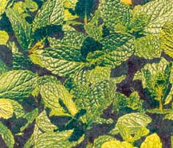

I read in your May 2000 issue about using ground cinnamon to repel ants ("Ant flavoring," Country Lore) and thought I'd pass along my natural technique. In the summer months, we leave our back door ajar while we are going in and out and to and from the garden. In doing this, I have noticed that the ants take full advantage of our open-door policy. To prevent them from finding our open door appealing, I have pulled a handful of spearmint from the herb garden and laid it across the doorway when the door is open. The strong scent confuses them and masks other, more inviting odors. In addition, I read or heard somewhere that ants lay out scented paths to food sources so that other ants can get in on the bounty. The strong spearmint scent masks this trail. We inherited a patch of spearmint in the garden from the previous owners, and I have found that it is quite invasive. So pulling up large quantities of it for this use is not a problem. By using it for its repelling quality each day, and then tossing the wilted sprigs into the compost when I'm done gardening for the day, I have kept the spearmint patch manageable and useful. I imagine other strongly scented herbs and spices would work in that way.
M. Leanbart
Iowa City, IA
|
 |
|
|